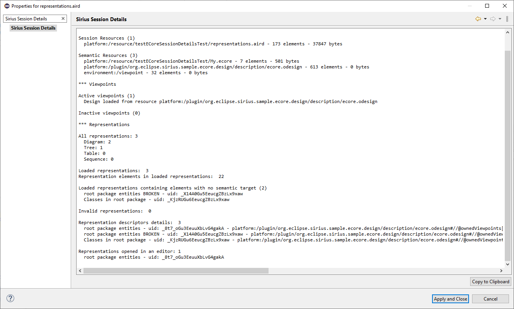

This document describes how to see information on the opened Sirius Session.
The Sirius Session is the runtime concept of a Sirius Modeling Project. It corresponds mainly to the information in memory of an opened Sirius project.
To get this information, right click on the aird and select
Properties and then
Sirius Session Details.
The Sirius Session detailed information tab provides information about
- the resources used (aird, srm, semantic and controlled resources as well) with number of contained elements
- the viewpoints used
- the representations (number, size, loaded representations, invalid representations, etc)
It also provides project dependencies information:
- General project dependencies: All direct and indirect projects that are used by the current project. They are projects that contain an aird or a semantic resource used by the current project. To calculate the indirect projects, it checks dependencies from the aird of the direct project dependency and so on recursively.
- Images project dependencies: Projects that contain images used by the nodes of the diagrams or by the rich text description.
Example:
